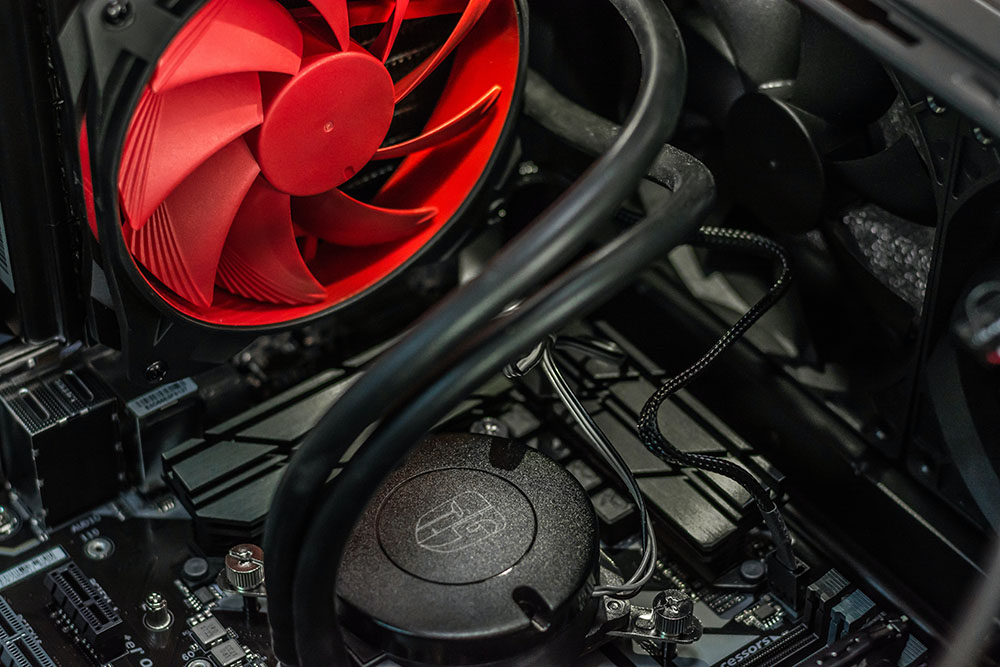

Computación
Formateo windows y linux
Instalación de programas
Actualizacion de software
Diagnostico de fallas

Formateo windows y linux
Instalación de programas
Actualizacion de software
Diagnostico de fallas
Actualizaciòn de kit
Reparación de bisagras
Mantenimiento preventivo
y correctivo
Ensamblaje de pc